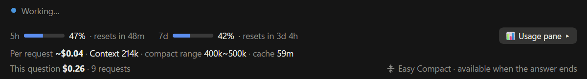
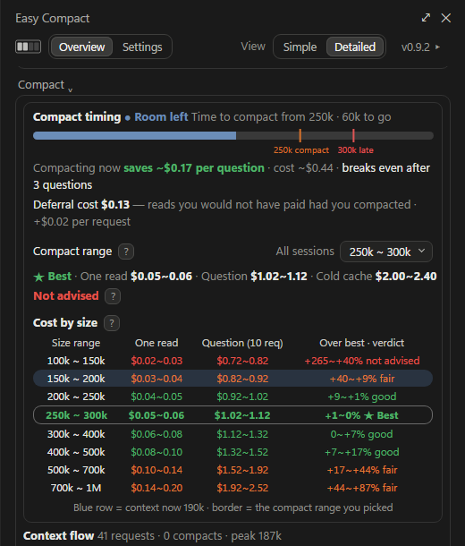
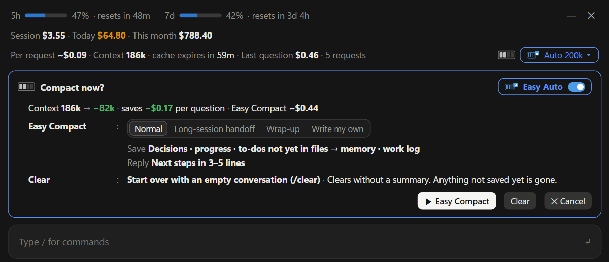
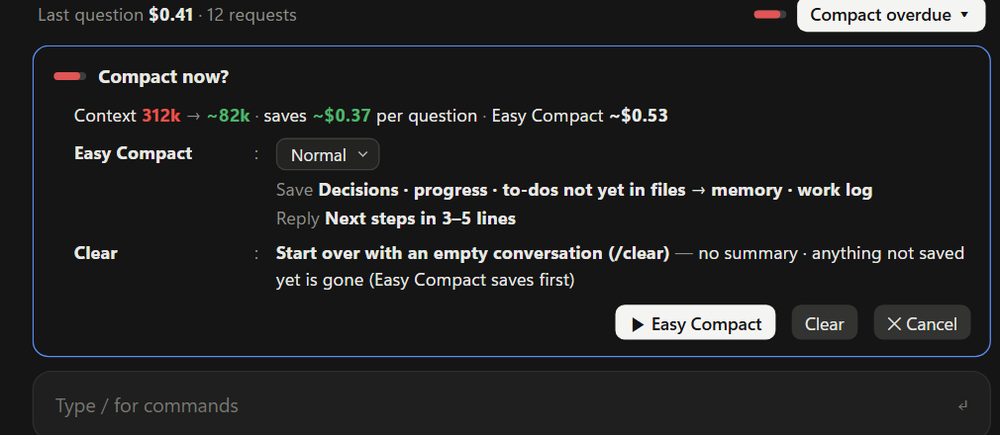
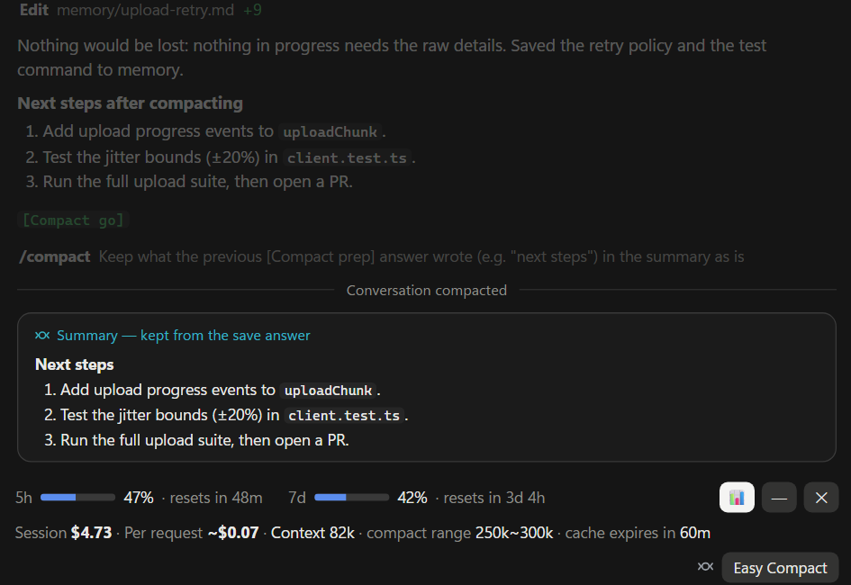
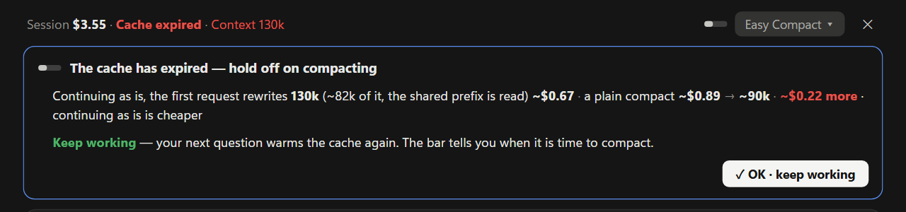
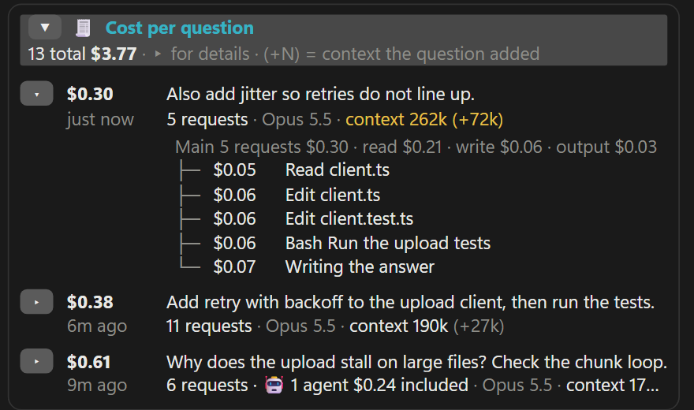
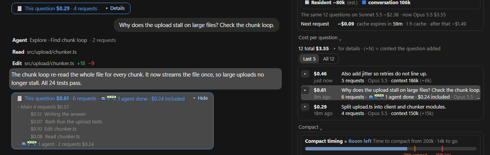

Cutting Claude Code Costs with Easy Compact
How you're billed, the habits that raise costs, and how to cut them, shown with interactive figures
Why the same question can cost several times more
- Claude doesn't remember the conversation, so the whole context is sent again with every request. The larger the context, the higher the cost per request (measured: about $0.11 below 200K, about $0.21 above 700K)[M10].
- If the resent context matches the cache on the server, it is read at 1/20 of the price. After a long break or a model switch, the cache can't be used, so the whole context is written to the cache again at the expensive rate[1].
- Habits that raise costs: staying in one session, putting off compacting, not moving on for fear of losing context, letting the cache go cold, always using Max effort, and giving big, vague tasks (Chapter 4).
- Compact at the right time, and open a new session when the task changes. In this calculation, compacting at around 200K–250K tokens was cheapest. Easy Compact shows on its bar when to compact and when the cache goes cold (Chapter 5).
1Comparing the cost of the same question
The same question can cost very different amounts depending on when you ask it. Ask it after coming back from a break, and it can cost up to 13× as much.
Three things set the cost: the context size, whether the server's cache is still there, and how many requests one question sends[4][M10].
The example question is the one used in Figures 1 and 2 (it finds and reads a file, runs the tests, then answers: 4 requests). Costs use Opus 5.5 rates.
On a subscription plan (Pro, Max and others), these amounts are not a bill. They are a gauge of how fast your usage limits go down (see 2.3)[4].
2How you're billed
Cost is counted in tokens, and every request carries the whole context.
2.1 Tokens, context and cache
A token is the unit that cost is counted in. The context is the text sent with each request. The cache is the context of an earlier request, stored on the server. A request is one round trip: Claude Code sends the context to the server once and gets one reply back. One question sends several requests. So the cost per question is the sum of the costs of the requests sent during that question (see 2.2).
The context is all the text Claude reads with each request. It is made of small pieces called tokens. Click a block in the bar to see its text up close. Cost is also counted by the number of these pieces.
The split shown here is an illustration. The real split is done by the model, and the token counts follow measured ratios (about 1 character per token for Korean documents, about 1.5 characters per token for code)[M12]. The sizes of the first four blocks were measured with /context in a new session[M13].
As questions pile up, only the conversation part grows. Below is one example of the breakdown that /context shows right after opening a new session (it depends on the tools you have installed and your memory files)[M13]. All of this is sent again with every question (see 2.2).
Current context: 37K tokens. This figure assumes the context grows by about 30K tokens per question.
The cache is the context the server just received, kept for a while. If the start of the next request matches the cache, the cache is used as is (a cache hit). If you take a long break, the cache is deleted. With a 300K-token context:
Assumptions and sources
The character-to-token ratio was measured from how much large files read with Read added to the context (103 Korean Markdown files, 175 code files)[M12]. Deferred tool descriptions (about 85K) are loaded only when needed, so they are left out. Desktop app sessions start larger (median first request: 68K)[M13]. The cheapest point comes from the calculation in Figure 8, and the auto-compact point comes from the official documentation[5]. Rates are for Opus 5.5 (per million tokens: fresh input $4, 1-hour cache write $8, cache read $0.20)[3].2.2 How one question is processed
Claude doesn't remember past conversation. So each time Claude Code sends something to the server, it includes the entire conversation so far[1][2]. A request is one round trip: sending to the server once and getting one reply back. Cost is charged per request. A question is one message you type, and one question sends several requests.
Every request carries the whole context, so the cost per question is the sum of the costs of all its requests. In the author's logs, one question sent 12 to 32 requests on average[M10]. Figures 3, 6 and 8 later on count one question as 10 requests.
Assumptions and sources
The question, commands and output are examples. Grep, Read and Bash are names of Claude Code tools. The server sometimes asks for several tools to be run at once[11]. In practice, one question can send more than 10 requests[M10]. The context size starts from a new session's 37K of instructions and tool descriptions[M13], then adds, in turn, the question (1,500), search results (500), the file (14K) and test results (12K tokens).Since every request carries the whole context again, every request has its own cost.
Assumptions and sources
Even a new session starts at tens of thousands of tokens because of the instructions and tool descriptions[M13]. Even in a new session's first request, the first 72% was already in the cache[M13]. That is because a beginning that never changes, such as the instructions, shares the cache that other sessions wrote[1]. So question 1 costs a little more than the next ones, because it writes the rest of the instructions to the cache for the first time. The figure cuts one question down to 4 requests, as in Figure 1. In practice, one question can send more than 10 requests[M10]. Request costs use Opus 5.5: the part sent before as cache read ($0.20 per million tokens), the newly added part as cache write ($8), and what Claude writes as output ($20). Thinking text is also charged as output[3][4].2.3 Prices by model
API pricing is based on token counts. The same token has a different unit price for each job (fresh input, cache write, cache read, output), and prices differ again by model[3]. The output cost also covers the thinking Claude does before it answers[4][5].
3Cache and context size
The cache is the context of an earlier request, stored on the server for a while. If the start of the next request matches this cache, the cache is used as is instead of being read fresh. This is called a cache hit, and it costs 1/20 of the price. When the cache lifetime (usually 1 hour) passes and the cache is deleted, we say “the cache goes cold”. Once it goes cold, the whole context is written to the cache again. And the larger the context, the more is read each time, so the cost goes up.
3.1 Cache hits
The server stores the context it just received as a cache. When the next request comes in, the server compares it with the cache from the start and reuses the matching part instead of reading it fresh (a cache hit). That costs 1/20 of fresh input[3][7].
In Claude Code, /usage shows the session's cache hit rate on the “Prompt cache (main)” line[1]. In the author's October sessions, 99.0% of tokens were cache hits[M2].
Assumptions and sources
Without the cache, the whole context would be read as fresh input ($4 per million tokens). The hit part is counted as cache read ($0.20) and the new part as a 1-hour cache write ($8)[3]. Splitting the context into five parts is for illustration. The cache hit rate is counted in tokens. The documentation does not explain in detail how/usage counts its hit rate[1].3.2 Cache expiry and model switches
A cache is deleted once its lifetime (usually 1 hour) passes, and it can't be used after you switch models. Then the next request writes the whole context to the cache again from scratch[1][4].
Depending on how you use Claude and on your settings, the cache lifetime can also be 5 minutes. You can check your own cache lifetime and hit rate on the Prompt cache line in /usage[1].
Assumptions and sources
The cost depends only on whether the break went past the cache lifetime, not on how long it was. Re-caching cost about the same after an 82-minute break as after a 64-hour break[M3]. Each model has its own cache. Changing effort doesn't break the cache when you use Opus 5.5, Sonnet 5.5, Haiku 5.5 or Fable 5.1 with an API key or a Claude subscription. On other models, or on Amazon Bedrock or Google Cloud, changing it means writing everything to the cache again from scratch[1]. “Which is cheaper” is calculated as: continue = re-cache the whole context; compact = read the context without the cache ($4) + write a 15K summary + write the reduced 100K context to the cache; new session = write the 37K of instructions and tools to the cache[1][M13]. By default, the cache lifetime is 1 hour for the main context when you use a Claude account within your plan. For API keys, cloud providers, usage credits and subagents it is 5 minutes, and it can be changed to 1 hour with a setting (promptCacheTtl) or your organization's managed settings[1].These lists summarize the official documentation[1]. The cache breaks less often if you choose the model and effort at the start of a session and compact at a natural break in your work.
3.3 Long sessions
See how the cost per question changes as a session goes on, and how much compacting brings it down.
Compacting shrinks the conversation so far into a single summary. You can run it yourself with /compact, or Claude Code does it on its own when the context reaches about 967K tokens (auto-compact)[5].
Assumptions and sources
A new session starts at 50K, and the context grows by 30K tokens per question. One question is 10 requests, and each request writes 3,000 tokens of new text to the cache[M4]. Output per request at each effort level is measured (Max 2,434, Extra 1,458, Medium 385 tokens)[M8]. *Low and High are assumptions that fill the gaps between these. One compact = read the context + write a 15K summary + re-cache 43K tokens, and the size afterward is 100K[M5]. Haiku 5.5 bills at 5× rates once a request exceeds 100K tokens[3].3.4 A real session
This recalculates one of the author's real sessions (2026-10-20 to 10-23, Opus 5.5, 1,821 requests). Simply compacting at 250K would have cut the total by about a third (estimate)[M11].
Assumptions and sources
Only the main Opus 5.5 requests in the session log are counted (subagents excluded). Requests are plotted in groups of 5. The ideal case keeps the same requests, the same new text and the same output, and only reduces the context size. One compact = read the context + write a 15K summary + re-cache 43K tokens[M5]. When the cache is cold, only the reduced context is re-cached. The cost of re-reading files after a compact is not included, so the real savings may be smaller than this. The real side leaves out the compact summary requests, which are not in the session log. Costs use API rates (the author is on a subscription, so this is not a billed amount).Pooling many sessions (1,980 questions) gives the same picture: the cost per request was about $0.11 below 200K and about $0.21 above 700K[M10]. So when your average cost per question is high, look at the cost per request first. If that is high too, the context is large (time to compact). If not, each question is asking for a lot of work.
4Habits that raise costs
The same work can cost several times more depending on your habits. The longer a session runs, the more each request has to re-read. After a long break, the cache is cleared and the whole context has to be re-cached. Below are the habits that raised costs in real records. Section 5.3 shows how Easy Compact helps with each one.
Staying in one session after the task changes
When the task changes, the old task's context is still loaded. Even a one-line question pays to read the whole accumulated context[4]. In the author's records (1,980 questions), the cost per request was about $0.11 with the context under 200K and about $0.21 over 700K, close to double[M10].
Before you switch tasks, first ask: “Write what we've decided so far and the next steps to progress.md.” Start the new task in a new session. When you go back to the old task, say “Read progress.md first, then continue” (5.2). /clear empties the whole context, so use it only after the note is saved[9].
Putting off compacting until auto-compact
Auto-compact is the compact Claude Code runs by itself when the context reaches about 967K tokens[5]. If you wait until then, the cost of reading a large context adds up with every question. Over ten days of development, the median context size at which the author actually compacted was 650K[M4]. By the math in Figure 8, compacting at 650K makes the total for 60 questions about 1.3 times the total at the cheapest point (about 230K).
Type /compact yourself at a natural break in the work, such as when you finish a feature[1]. With the context around 200K–250K, that is also the cheapest time in terms of cost (Figure 8).
Putting off compacting and new sessions for fear of losing your place
When your decisions and next steps exist only in the conversation, you worry they will vanish after a compact or in a new session. So you keep dragging one session along. Then, as in Habits 1 and 2, every question re-reads a grown context and the cost goes up. The worry itself is not wrong. The author also had to go back through the conversation records of 4 closed sessions to find decisions that were never written down[M9].
Before you compact or open a new session, ask: “Write what we've decided so far, why, and the next steps to progress.md.” What is written in a file stays, both after a compact and in a new session. When you compact, add what to keep after /compact (for example, /compact focus on decisions and next steps) and the summary will focus on it[9]. The steps are in 5.2.
Letting the cache go cold (long breaks, switching models midway)
The cache is cleared when it goes unused for a set time (1 hour on a Claude account plan)[1]. The first request after that re-caches the whole context from scratch. In the author's records, a single first request after a 15-hour break cost $7.08. With the cache still there, the same request would have cost about $0.21[M11]. Switching models midway also leaves the cache unusable, so everything is cached again from scratch[1].
Before a long break, such as lunch or the end of the day, shrink the context with /compact. Then there is less to re-cache when you come back. If you are done with the task, write a progress note and close the session. Pick the model when you start a session and don't switch midway[1].
Keeping effort at Max all the time
Raise the effort, and the thinking Claude does before it writes the answer is also billed as output tokens[4]. Output (writing the answer) costs 100 times as much as a cache read[3]. In the author's records, output per request was 2,434 tokens at Max and 1,458 tokens at Extra. The tasks were different, so this is not a difference of effort alone[M8].
Day to day, keep it one level lower. Raise it to Max only when the work needs deep thought, such as a hard design problem or a stubborn bug[4]. On these models, changing the effort doesn't break the cache, so it is fine to change it midway (3.2).
Giving big, vague requests
With a vague request, Claude looks up and reads all sorts of things, so one question sends many requests[4]. Each request re-reads the whole context, so you pay for every request (Figure 1). In the author's records, even in small sessions with the context under 100K, one question sent about 32 requests on average, and the median cost per question was $0.96. The number of requests moved the cost per question more than the context size did[M10].
Say which file or function to change and what result you want (for example, “Change the retry interval in upload/chunker.ts to 2 seconds”). Hand big reads, such as a survey of the whole repository, to a subagent. That reading then does not pile up in this session's context[4].
5Cutting costs
Once the context grows, compacting or handing off to a new session at the right time is what brings costs down. By this guide's math, shrinking the context at 200K–250K was the cheapest. Easy Compact shows you that moment on its bar.
5.1 When to compact
Compacting shrinks the context to a single summary, so every question after that has less to read[1]. Too early, and you pay for summaries too often. Too late, and the cost of reading a large context piles up. Drag the slider to find the cheapest point.
Assumptions and sources
The same assumptions as Figure 6 (Opus 5.5, Extra). The number of requests per question is fixed, so here the average cost per question moves only with the compact point. In practice, the number of requests moves it more (3.4).5.2 Compacting and session handoff
When the context has grown, you have three options: keep going, compact, or hand off to a new session. Compacting shrinks the conversation so far into a single summary, in the same session. A session handoff means saving a progress note, then opening a new session and having it read that note first. The three differ in what is kept and what they cost.
Assumptions and sources
After a compact, CLAUDE.md, auto memory and the plan are reloaded from disk, and up to five recently edited files are read again (just the name for long files)[9]. Which details drop out differs from summary to summary, so ◐ and the struck-through items are only a concept sketch. Costs are for 10 more questions (the context grows 30K per question, Opus 5.5, Extra). A compact is counted as reading the context + writing a 15K summary + re-caching 43K, leaving a 100K context[M5]. A session handoff is assumed to start at about 37K after writing the progress note (reading the context + 4K output tokens), with the first request reading the opening 72% from the cache[M13].Evidence for keeping a progress note
A compact summary can leave out what was decided and why. That is why this guide recommends keeping a separate progress note. The evidence is below.
Example progress note to save before compacting
# Progress note (upload fix) Goal: keep large file uploads from stalling Decided: send files in chunks. Reason: reading a whole file at once runs out of memory Done: chunking finished, 24 tests pass Next: 1. show progress 2. test the retry interval Related files: src/upload/chunker.ts, client.test.ts Open question: how many retries at most?
- Ask for the note
“Write what we've decided so far and the next steps to progress.md.” - Skim it
Check once that no decision is missing. - Compact or hand off
Give a focus, as in/compact based on progress.md, focus on next steps[9], or in a new session say “Read progress.md first, then continue.” - Make it stick
For long-running work, add one line to CLAUDE.md: “Read progress.md first.” CLAUDE.md is read automatically in a new session and after a compact[9].
Keep the note short. After a compact, a long file comes back as just its name, not its contents[9]. Writing the note before a break is cheap. If you write it after the cache has gone cold, that note request re-caches the whole context (3.2).
5.3 Easy Compact
Easy Compact is a Claude Code plugin. It shows the cost per request, the context size and the time until the cache expires on the bar above the prompt box, and tells you when to compact. Using Easy Compact costs almost nothing. The bar and the pane are drawn by a Claude Code mod and scripts that read the session records on your PC, so looking at them uses no tokens. Tokens are used only when you have Claude do something, such as saving a progress note or compacting. It is free (MIT license)[8].
Habit 1 · Staying in one session after the task changesThe bar right above the prompt box always shows the cost per request and the context size. Even after the task changes, you see right away that the cost is going up.

Habit 2 · Putting off compacting until auto-compactWhen the context enters the compact range you set in Easy Compact's settings, the context number and the compact button on the bar change to orange “Time to compact”. Past the range, they change to red “Compact overdue”. The compact range is 250K–300K when you install, and you can change it after checking the Cost by size table (Screen 2). With Easy Auto on, once the context passes the separate Easy Auto range, it writes a progress note and compacts by itself. If a long task was running, it picks the work back up.


Habit 3 · Putting off compacting and new sessions for fear of losing your placePress [Easy Compact] and Claude first checks what the compact might lose. It then writes the decisions, progress and next steps that are not yet in files to memory or a progress note (md). Then the compact summarizes the conversation. What was written to files stays after the compact, and the summary keeps the next steps.


Habit 4 · Letting the cache go cold (long breaks, switching models midway)The bar shows the time until the cache expires. After it expires, Easy Compact tells you, in dollars, whether simply continuing or compacting is cheaper.

Habit 5 · Keeping effort at Max all the timeChoosing the effort is up to you. When you open a finished question, Easy Compact shows its output cost (incl. thinking). If the effort changed partway through a question, it splits the cost by effort. You can see how much more a higher effort costs and then decide.

Habit 6 · Giving big, vague requestsEvery answer ends with that question's cost and number of requests, and opening it shows the cost of each step. Once you see which questions took many requests, you can ask more specifically next time.

Easy Compact alert points in the session from 3.4
Easy Compact tells you when to compact through the color and text of the bar above the prompt box. When the context enters the compact range, it shows orange “Time to compact”. Past the range, it shows red “Compact overdue”. You set the compact range in Easy Compact's settings, and it is 250K–300K when you install[8]. Below, the points where that display would have changed are marked on the session record from 3.4.
Assumptions and sources
The dots mark where the actual context size enters the compact range (orange) and passes it (red), and the first question after the cache went cold (blue). After a compact, it starts again from orange. The estimate uses the same math as “if compacted every 250K” in Figure 7. It leaves out alerts that would have been ignored and the cost of re-reading files after a compact. The default range at install is a little later than the cheapest point in Figure 8 (about 230K) for two reasons: re-running the math on 128 real sessions put 230K–330K within 2% of the cheapest cost, and compacting less often suits the flow of work better[8].Before you install
If these habits sound familiar, try Easy Compact
What Easy Compact does for you
- Putting off compacting until auto-compact→When the context enters the compact range you set, the bar turns orange “Time to compact”, and past the range, red “Compact overdue”. With Easy Auto on, it compacts by itself
- Putting off compacting and new sessions for fear of losing your place→Press [Easy Compact] and the decisions, progress and next steps not yet in files are saved to memory or a progress note (md), then the compact summarizes the conversation. What is saved to files is still there after the compact
- Letting the cache go cold→The bar shows the time until the cache expires. After it expires, Easy Compact tells you which is cheaper: compacting or simply continuing
What Easy Compact shows you
- Staying in one session after the task changes→The bar always shows the cost per request and the context size, so you notice right away when the cost goes up
- Keeping effort at Max all the time→It shows a finished question's output cost (incl. thinking), split by effort if the effort changed partway through
- Giving big, vague requests→Each answer shows that question's cost and number of requests, so you can spot the questions that took many requests right away
Install Send the line below to Claude in the desktop app's Code tab, or to claude in a terminal. Then quit the app completely and open it again. You need Claude Code 2.1.295 or later and git (if either is missing, Claude will guide you).
Install this plugin: github.com/JaeSeongHa5280/easy-compact (claude plugin marketplace add JaeSeongHa5280/easy-compact, then claude plugin install easy-compact@easy-compact)
6Limits of these numbers
- Amounts are converted at API list prices. On a subscription plan, they are not what you are billed but a gauge of how much of your limit you use[4].
- The measurements come from one person's records (the author's), so results will differ with the kind of work. The output by effort level also comes from different tasks, so it is not the effect of effort alone[M8].
- The math in Figures 3, 6, 8 and 9 uses simplified assumptions (1 question = 10 requests, and so on). To see your own actual costs, use Easy Compact or /usage.
- In Figures 7 and 10, “if compacted every 250K” and “if compacted at the alert points” are estimates. Only the context size was reduced in the math. The cost of re-reading files after a compact is not included.
- The characters-per-token ratio and what a new session contains are the author's values. They vary with installed tools, memory and the kind of text[M12][M13].
- How many tokens a limit allows, and when the 5-hour window starts counting, are not published[6].
- With a 1-hour cache, claude in a terminal may compact a long idle session by itself just before the cache goes cold (the docs don't mention this for the desktop app)[1].
- Rates and cache lifetimes can change. Everything here is as of 2026-10-23.
References
- [1]Claude Code, “How Claude Code uses prompt caching”. code.claude.com/docs/en/prompt-caching
The whole context is sent again with every request · three cache layers (system prompt, project, conversation) · default cache lifetime (1 hour for the main context on a Claude account plan; 5 minutes for API keys, cloud providers, usage credits and subagents) and the setting that changes it to 1 hour · the Prompt cache (main) line in/usage(hit rate, misses, whether the cache is warm now) · what breaks the cache (model, fast mode, MCP, compacting and more) and what doesn't break it (effort, for Opus 5.5, Sonnet 5.5, Haiku 5.5 and Fable 5.1 with an API key or a subscription) · a compact after the cache goes cold reads without the cache · sessions in the same folder share the opening part · auto-compact for idle sessions in the terminal. - [2]Claude API, “Using the Messages API”. platform.claude.com/docs/en/build-with-claude/working-with-messages
The API is stateless, so the whole conversation history is sent. - [3]Claude API, “Pricing”. platform.claude.com/docs/en/about-claude/pricing
Rates by model · cache multipliers (on Opus 5.5 and Sonnet 5.5, a cache read costs 0.05 times fresh input) · the 1M-token window has the same rates. - [4]Claude Code, “Manage costs effectively”. code.claude.com/docs/en/costs
Costs grow with context size · thinking tokens are billed as output · in a long session, even a one-line question uses the whole context · the first message after a break misses the cache · /clear costs nothing · amounts shown to subscribers are not what they are billed. - [5]Claude Code, “Model configuration”. code.claude.com/docs/en/model-config
Default model Opus 5.5 · 1M-token window · auto-compact at about 967K · effort levels · all thinking tokens are billed. - [6]Claude Help Center, “How do usage and length limits work”. support.claude.com/en/articles/11647753
5-hour and weekly limits · shared by claude.ai, Claude Code and the desktop app · drawn down according to context size, features, model and effort · usage credits. - [7]Claude API, “Prompt caching”. platform.claude.com/docs/en/build-with-claude/prompt-caching
How caching works · 1-hour cache lifetime. - [8]easy-compact. github.com/JaeSeongHa5280/easy-compact
Public README · changelog (1.0.5) · intro demo (the source of the screen images) · MIT license. - [9]Claude Code, “Explore the context window”. code.claude.com/docs/en/context-window
What remains after a compact: CLAUDE.md, auto memory and the plan are reloaded from disk, and up to five recently edited files are read again (only the path for long files) · giving /compact a focus · /clear. - [10]Anthropic Engineering, “Effective harnesses for long-running agents” (2025-11-26). anthropic.com/engineering/effective-harnesses-for-long-running-agents
Long work spanning many sessions did not carry on with compacting alone · they kept a progress file, git history and a feature list, and had each new session read them first · results are reported qualitatively, without numbers. - [11]Claude API, “Tool use with Claude”. platform.claude.com/docs/en/agents-and-tools/tool-use/overview
When Claude returns a tool request (tool_use), the app runs the tool and sends the result (tool_result) with the next request · tools like Bash run on the app's side · several tools in one response · tool requests and results also cost tokens. - [M1]Size of a new session's first request — measured 2026-09. Desktop app 42K–60K (median 53K) · terminal 37K tokens.
- [M2]Cache hit rate — measured 2026-10, the author's session records (Opus 5.5 main, by tokens): 99.0% (36 sessions with over 150 requests: median 99.1%, 10th percentile 97.7%). 95.9% for 21 sessions and 1,510 requests in 2026-08.
- [M3]Cache expiry cases — measured 2026-09. In a session of 23 exchanges, one question after a 6-hour break = 17% of that session's cost · across 44 sessions, 21 first requests after breaks of over 1 hour = about 12% of the total cost · re-caching cost almost the same after an 82-minute break and after a 64-hour break (both about 400K tokens).
- [M4]Ten days of Easy Compact development — measured 2026-10-10 to 19. 16,909 requests (agents included), API cost $2,374: cache reads 62% · output 20% · 1-hour cache writes 17% · 5-minute cache writes 1%; requests averaged 448K tokens; the 52% of requests over 400K made up 67% of the cost; compacts happened at 243K–952K (median about 650K). The roughly 3,000 tokens of new cache writes per request were worked out backward from this breakdown.
- [M5]Size after a compact and the amount re-cached — measured during development: 97K–125K tokens. 114 compacts in the author's session records (2026-10-23): median size afterward 98K; the first request right after a compact re-cached a median of 43K (middle half 28K–49K).
- [M6]5-hour limit and API cost — 2026-10-06 and 07, records of the author (Max 20) using up the limit twice. One 5-hour limit ≈ $95–120 of API cost (estimate).
- [M7]Easy Compact amount check — 2026-10-16, within $1 of this month's amount in the author's app settings.
- [M8]Output per request by effort — the author's question records (Opus 5.5). Max: 302 questions · 2,434 tokens / Extra: 190 questions · 1,458 / Medium: 6 questions · 385. The tasks differ, so this is not the pure effect of effort (estimate).
- [M9]Decisions left only in the conversation — a case from 2026-10-21. Decisions and research findings never written into a document were found again in the conversation records of 4 archived sessions and copied over.
- [M10]Cost per question and context size — measured 2026-10-23. 139 of the author's session records · Opus 5.5 main requests (agents' share excluded) · 1,980 questions. Cost per request about $0.11 (under 200K) → $0.21 (over 700K) · under 100K, 31.7 requests per question on average · median cost per question $0.96; in 41 sessions with 10 or more questions, rank correlation with the average cost per question — requests per question 0.91 · context size 0.69.
- [M11]One real session — measured 2026-10-20 to 23. The author's Claude Code session record, 1,821 Opus 5.5 main requests · about 52 hours, API cost $242.28: 4 requests that re-cached the context after long breaks (1 h 47 min to 15 h 4 min) paid $15.43 more than with the cache · the 46% of requests over 400K made up 59% of the cost · 7 compacts (447K–833K, median 524K). “If compacted every 250K” is an estimate that keeps the same requests, new text and output and changes only the context size, compacting at 250K down to 100K ($163.85, 22 compacts).
- [M12]Characters and tokens — measured 2026-10-23. How much large files (8,000+ characters) read with Read grew the next request's context, in the author's records: 103 Korean md files (median share of Korean characters 37%), median 1.09 characters per token (middle half 1.04–1.11) · 175 code files 1.54 (1.49–1.61), about 32 tokens per line.
- [M13]Context of a new session — measured 2026-10-23.
/contextin a new terminal session of the author's: 36.6K tokens (system prompt 2,800 · tool descriptions 19,600 · MCP 1,344 · memory files 5,600 · skills 7,200 · conversation 10; about 85K of deferred tool descriptions not loaded). In all 154 of the author's sessions, the first request read the opening part from the cache (median share read from the cache 72%, median first-request size 68K).
As of 2026-10-23 · Claude Code (desktop app Code tab and terminal) · Easy Compact 1.0.5